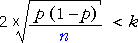

Quelle quantité de données que je dois recueillir?
Dans la page précédente, nous avons étudié comment déterminer la taille de l'échantillon nécessaire pour estimer une moyenne de population à une précision spécifiée. Un calcul similaire peut être utilisé pour trouver la taille de l'échantillon nécessaire pour estimer une probabilité.
Un intervalle de confiance à 95% pour une probabilité π est de la forme

Si nous voulons que notre estimation soit au sein du π k avec une probabilité de 0.95, alors nous avons besoin d'être n assez grand pour que

Pour utiliser cette inégalité, nous avons besoin de deviner la valeur de p -- il n'a pas besoin d'être particulièrement précis.
| Une petite enquête pilote est souvent effectuée pour obtenir une estimation préliminaire de la proportion. |
|---|
Si nous ne pouvons mieux faire, la valeur du «pire cas», p = 0,5 peut être utilisé, mais la taille de l'échantillon qui en résulte peut être plus élevé que nécessaire.
La taille de l'échantillon nécessaire peut être trouvée par essais et erreurs dans l'inégalité ci-dessus.
Combien de personnes doivent être téléphoné?
Un administrateur de l'hôpital veut mener un sondage téléphonique afin de déterminer la proportion de personnes dans une ville qui ont visité un hôpital dans la dernière année, soit en tant que patient ou le visiteur.
| Quelle taille d'échantillon est nécessaire pour être au moins à 95% que l'estimation qui en résulte sera à 0.04 de la proportion réelle de la population? |
|---|
Le schéma suivant permet les calculs.
Nous n'avons pas reçu de deviner la valeur de π, alors faites glisser le curseur à 0.5 — le pire des cas. (Utilisez les touches fléchées de votre clavier pour le réglage fin de π.)
Faites glisser le curseur jusqu'à la taille de l'échantillon '±' valeur est inférieure à 0.04. Vérifiez que la taille de l'échantillon devrait être 625 ou supérieur.
Si nous savons (peut-être d'une enquête pilote ou d'autres informations obtenues à partir des hôpitaux locaux) que la proportion ne sera plus que de 0.10, la taille de l'échantillon peut être réduit. Utilisez le curseur pour modifier la conjecture de π à 0.10 dans le diagramme ci-dessus et vérifier que sur un échantillon de 225 serait suffisant pour estimer π au sein de 0.04 avec une confiance de 95%.
Obtention de la taille de l'échantillon par la résolution d'une équation
Essai-erreur peut être évitée avec un peu d'algèbre. L'équation
peut être ré-écrite sous la forme